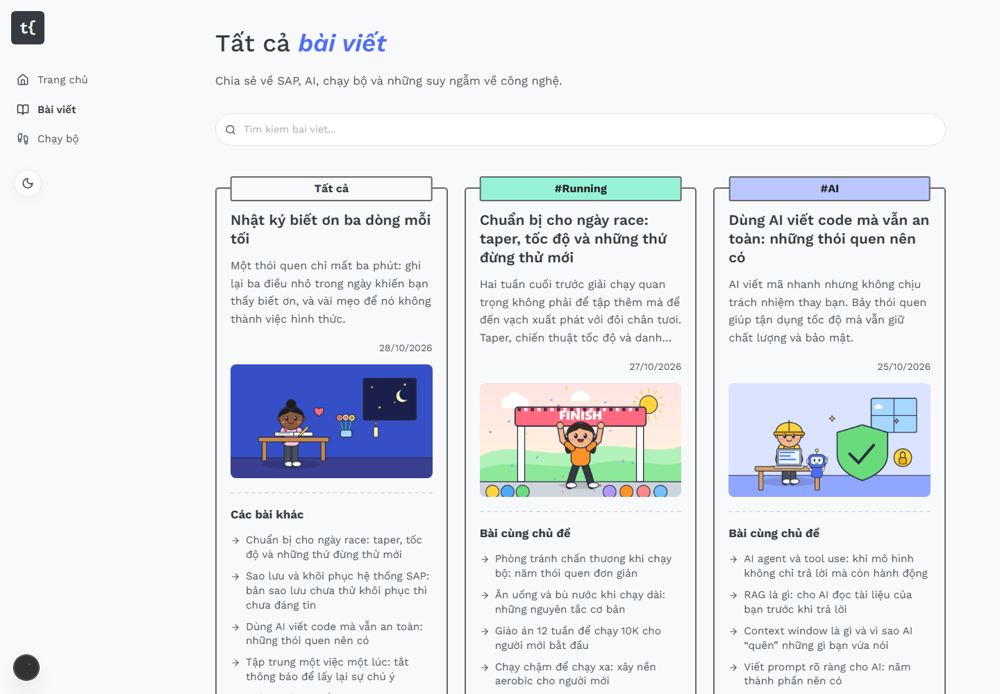
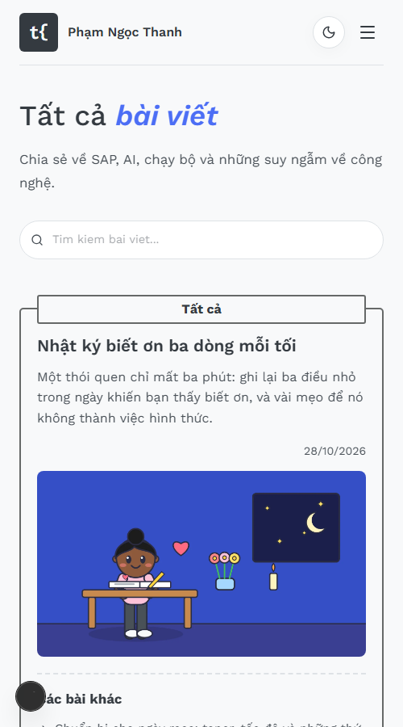

Blog được thiết kế lại theo giao diện của ehkoo.com: bố cục sidebar + lưới thẻ, quy tắc gom bài, ảnh bìa, bảng màu và font.
Thiết kế lại toàn bộ giao diện blog theo trang ehkoo.com: sidebar trái, lưới thẻ viền đậm có nhãn màu, mỗi thẻ gồm một bài nổi bật kèm ảnh bìa và danh sách “Bài cùng chủ đề”. Nội dung và tên thương hiệu của blog được giữ nguyên.
| Mục | Nội dung |
|---|---|
| Phạm vi | Toàn site: trang chủ (Về tôi), /blog, /habits, /projects, điều hướng, footer |
| Ngoài phạm vi | Hệ thống MDX, trang quản trị, bố cục trang bài /blog/[slug] (vẫn cột đọc 820px) |
| Công nghệ | Next.js 15 (App Router), React 19, Tailwind CSS 4 |
Trang chủ (/) là nội dung “Về tôi” (giới thiệu và hành trình cá nhân). Đường dẫn cũ /about chuyển hướng vĩnh viễn (308) về /, không còn trong sitemap. Lưới thẻ chủ đề mô tả dưới đây nằm ở trang Bài viết (/blog); khi chọn một tag (/blog?tag=…) trang chuyển sang danh sách lọc có tìm kiếm.
Bố cục lấy theo đúng hình ảnh thực tế của Ehkoo (đã chụp màn hình và đọc CSS để đối chiếu): sidebar cố định bên trái (logo chữ + menu dọc có icon), phần nội dung là lưới thẻ 3 cột. Mỗi thẻ là một khung viền đậm 2px, bên trên có một nhãn màu nằm trên đường viền. Dưới nhãn là bài nổi bật (tiêu đề, tóm tắt, ngày, ảnh bìa), tiếp theo là đường kẻ đứt và danh sách “Bài cùng chủ đề” với mũi tên đầu dòng.


| Điểm | Chi tiết |
|---|---|
| Lưới | 1 cột (mobile), 2 cột (từ 768px), 3 cột (từ 1280px); các thẻ cùng hàng cao bằng nhau |
| Sidebar | Từ 1024px: rộng 13rem, dính trên cùng khi cuộn; gồm logo và các liên kết: Trang chủ, Bài viết, Sở thích (nhóm xổ xuống: mục con Chạy bộ ẩn mặc định, hiện khi bấm Sở thích hoặc mũi tên; tự mở khi đang ở trang Chạy bộ), nút đổi giao diện sáng/tối. Dưới 1024px dùng thanh trên cùng và menu trượt |
| Nhãn thẻ | Chữ đậm căn giữa, nền màu pastel; liên kết tới /blog?tag=…. Khối “Tất cả” và “Khác” dùng nhãn không tô màu |
| Màu nhãn | CSS #bac8ff, JavaScript #ffe066, TypeScript #3178c6 (chữ trắng), HTML #fcc2d7, Vue #b2f2bb, React #a5d8ff; tag khác lấy một màu pastel cố định theo tên (src/lib/topic-tab-color.ts) |
.site-container, tiêu đề chính là h1.t{.| Quy tắc | Chi tiết |
|---|---|
| Khối “Tất cả” | Đứng đầu trang Bài viết. Bài mới nhất là thẻ nổi bật, tất cả bài còn lại nằm trong danh sách “Các bài khác” (không giới hạn 5). Tiêu đề liên kết tới /blog. |
| Khối theo tag | Mỗi tag một khối; một bài có nhiều tag xuất hiện ở khối của từng tag. Bài không có tag vào khối “Khác”. |
| Bài nổi bật | Bài mới nhất của nhóm. Các bài còn lại là “Bài cùng chủ đề”, mới nhất trước, tối đa 5. |
| Thứ tự khối | Nhiều bài nhất trước; bằng nhau thì khối có bài nổi bật mới hơn trước. |
| Khối “Khác” | Tiêu đề không có liên kết (bộ lọc tag không có bài nào để hiển thị). |
| Ngày không hợp lệ | Được coi là 0 để thứ tự sắp xếp vẫn ổn định. |
Cài đặt: groupPostsByTopic() và groupAllPosts() trong src/lib/group-posts-by-topic.ts (hàm thuần, không phụ thuộc fs/db).
Ảnh bìa là tùy chọn, lấy từ trường coverImage (MDX) hoặc “Ảnh bìa” trong trang quản trị. Component PostCover luôn dựng một khung 16:9 cố định nên thêm hoặc bỏ ảnh không làm lệch bố cục.
| Tình huống | Kết quả |
|---|---|
Có ảnh, đường dẫn nội bộ (bắt đầu bằng /) | Hiển thị ảnh, cắt theo 16:9 (object-cover), tải lười |
| Không có ảnh | Nền gradient theo màu accent + nhãn chủ đề |
Ảnh là URL ngoài (https://…) | Dùng fallback. Chính sách CSP của site chỉ cho img-src 'self' |
| Ảnh lỗi khi tải | Chuyển sang fallback, kể cả lỗi xảy ra trước khi trang hydrate |
Đường dẫn //host hoặc có dấu \ | Bị từ chối, dùng fallback |
| Thành phần | Sáng | Tối |
|---|---|---|
| Nền trang | #f8f9fa | #1f2021 |
| Chữ chính | #343a40 | #e9ecef |
| Chữ phụ | #495057 | #adb5bd |
| Viền thẻ (2px) | #666968 | #4b4c4c |
| Viền nhẹ, đường kẻ | #dee2e6 | #3a3b3c |
| Accent (liên kết, nút, tiến độ đọc) | #4c6ef5 | #91a7ff |
| Nền accent nhạt (fallback ảnh bìa) | #edf2ff | #262b45 |
--font-serif trỏ về Work Sans nên mọi tiêu đề tự đổi..site-container rộng tối đa 1100px nằm trong cột nội dung bên phải sidebar (tổng tối đa 90rem). Trang bài viết giữ cột đọc 820px./blog thẻ bài dùng cùng kiểu viền.#1f2021 như Ehkoo; nhãn pastel giữ nguyên với chữ tối.h1 (trang chủ là tiêu đề “Về Phạm Ngọc Thanh”).section có tên truy cập, gắn qua useId nên tag nhiều từ hoặc có dấu vẫn hợp lệ.| Quyết định | Lý do | Đổi khi nào |
|---|---|---|
| Bài xuất hiện ở khối của mọi tag của nó, và có thêm khối “Tất cả” | Người đọc tìm theo chủ đề nào cũng thấy bài; khối “Tất cả” liệt kê toàn bộ bài viết | Khi số tag nhiều làm trang chủ quá dài: có thể giới hạn số khối |
Dùng <img> thường, không dùng next/image | Ảnh tải lên lúc chạy nằm trong public/uploads; tối ưu hóa với chế độ standalone chưa được kiểm chứng | Khi cần tối ưu ảnh phía server |
| Dùng bảng màu và font của Ehkoo (Work Sans, nền #f8f9fa, accent indigo) | Yêu cầu là “giống Ehkoo”; giá trị lấy từ ảnh chụp và CSS thực tế của họ | Muốn quay lại màu xanh lá / font serif cũ: sửa các biến trong globals.css và layout.tsx |
| Sidebar trái từ 1024px, lưới thẻ 3 cột | Đúng cấu trúc của Ehkoo; tận dụng chiều ngang màn hình lớn | Khi ít bài khiến lưới thưa: giảm số cột |
| Tệp | Vai trò |
|---|---|
src/lib/group-posts-by-topic.ts | Gom bài theo chủ đề |
src/components/blog/post-cover.tsx | Ảnh bìa 16:9 và fallback |
src/components/home/topic-section.tsx | Khối chủ đề trên trang chủ |
src/app/page.tsx, src/app/blog/page.tsx | Trang chủ, danh sách bài |
src/components/blog/blog-card.tsx | Thẻ bài ở /blog (thêm ảnh bìa) |
src/components/layout/navbar.tsx, footer.tsx, admin-bar.tsx | Khung site (navbar = sidebar/thanh trên) |
src/lib/topic-tab-color.ts | Màu nhãn của từng chủ đề |
src/styles/globals.css, src/app/layout.tsx | Biến màu, font Work Sans / Inconsolata, lưới sidebar + nội dung, lớp .site-container |